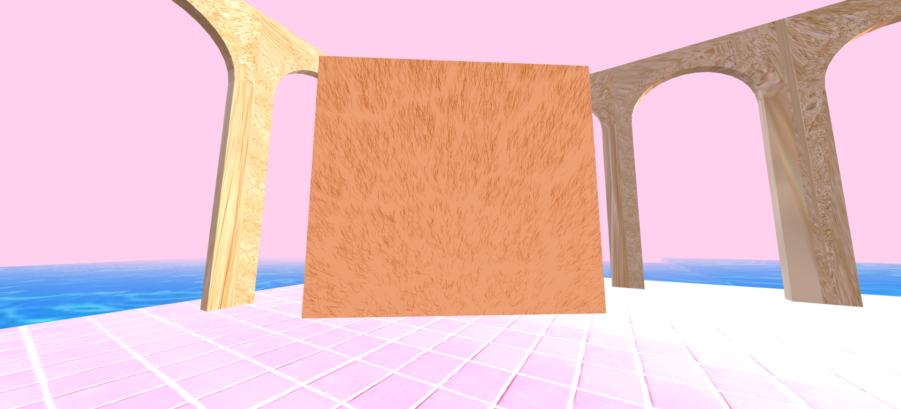
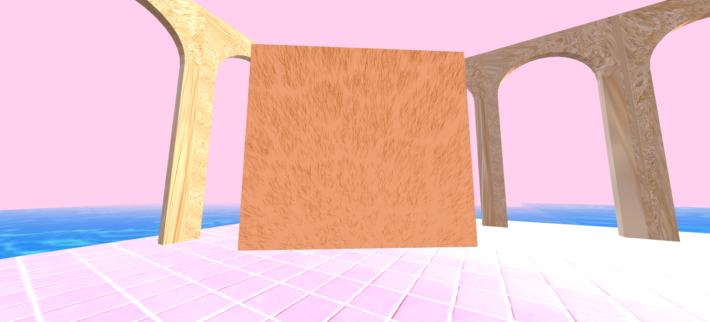
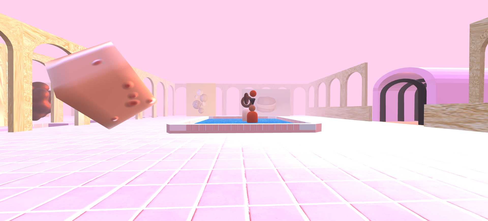
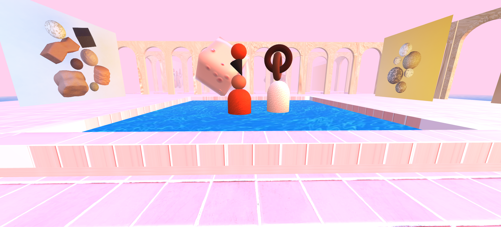
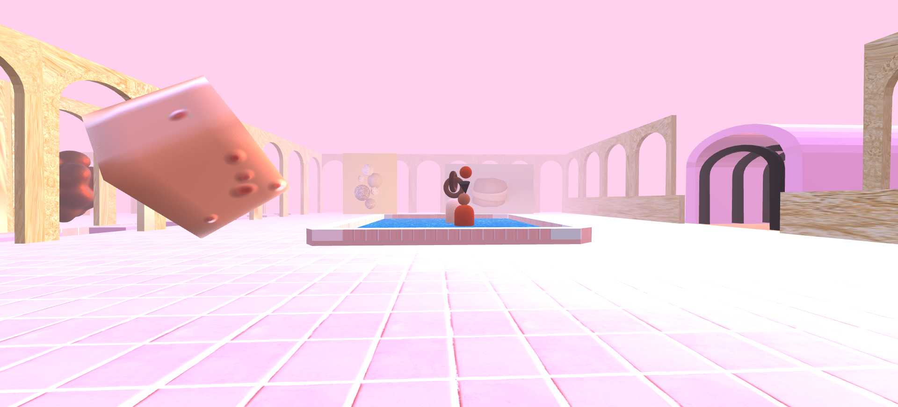
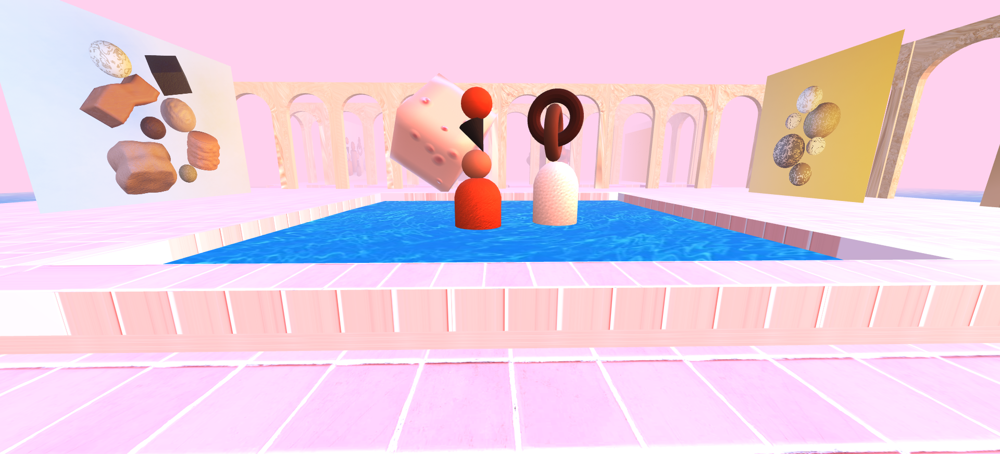

I’m Rachel Centinaje, a digital media artist working video, motion graphics, 3D modeling, and illustration. Art has helped me gain insight about the world and myself. A lot of my inspiration comes from digital artists, nostalgia, film, video games, and pop culture. When I consume things, I like to remix it to form my interpretation. Digital artists Jonathan Zawada, Quentin Deronzier, and Kim Laughton influence my works because it looks dreamlike, whimsical, and odd, transporting the viewer to an unfamiliar world, but at the same brings out familiarness. It inspires me to create art and reflect that in my own style and works. My current work explores the relationship between digital technology and culture along with the psychological effects it has on us, especially with this odd transition between the old world and new technology.
Based in the San Francisco Bay Area, Rachel is a soon to be graduate of Bachelor of Fine Arts in Digital Media Art in San Jose State University. Throughout the course of the Digital Media Art Program, Rachel has completed courses that included working with 3D printing/modeling, programming, video art, and other digital mediums. The inspiration of her works range from current events, music, nature, personal experiences, pop culture, to identity and more. Her works use a range of distortion, psychedelic, repetition, and colorful stylized imagery. The two pieces Highlight and Color and Love explore the beauty standards in our modern society that is obsessed with perfection with the introduction of technology. At the moment, her work ties into her augmented reality piece Highlight. It uses colorful outlines to highlight the features of stretch marks instead of it being digitally erased. Color & Love is a fake skin care product designed to interrogate the beauty standard of having white/fair skin. Beauty Standards have shifted immensely as technology creates unrealistic standards for society.
medium: Blender, Substance Painter, Adobe Premiere, Photoshop
3D sculptures, simulations, and rendered portraits of the human figure and skin conditions make up the piece "In My Own Skin." Each piece experiments with different nodes to achieve the effect of wrinkles, acne, dry skin, excess skin, textured/bumpy, and pigmentation. Using simple polygons, these abstract shapes convey different body types and sizes. This project is important, because feeling positive and accepting one's appearance can play a critical role in one's mental health. This piece challenges how people perceive others' bodies, as well as their own. Acne, wrinkles, pigmentation, aging, fatness, etc. should be embraced and celebrated, because the human body is diverse and beautiful in all forms.

Portal to enter.
 
   
 